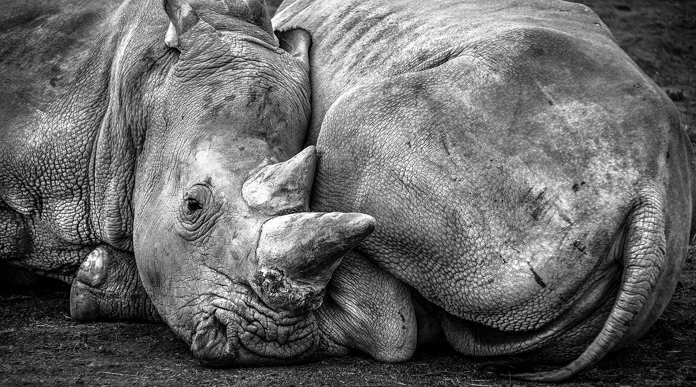
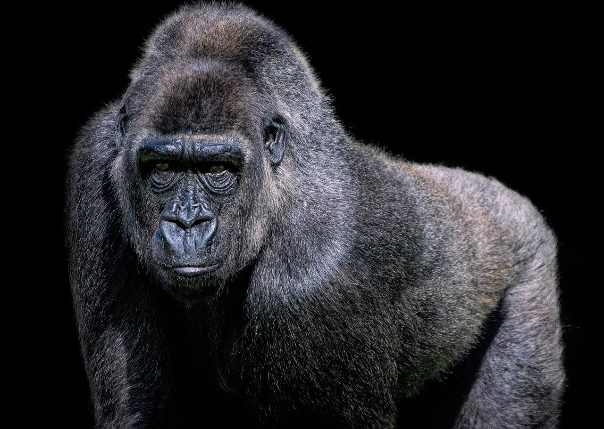

Human activities have led to the decline of many endangered species. Habitat destruction is one of the leading causes of species’ decline. As human populations continue to grow and urbanise, natural habitats are being destroyed and fragmented. This results in the loss of food, shelter, and breeding sites for many species.
Why should we care?
"Protecting endangered species is crucial for the preservation of biodiversity and the maintenance of healthy ecosystems. These species play essential roles in maintaining the
balance of their ecosystems and provide valuable resources for human populations. However, human activities such as habitat destruction, over-exploitation, and pollution have led to the decline of many species."